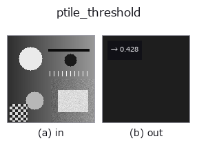

segmentation op• Datenarten: image → feature
• Aufruf: fullseye.apply(img, "ptile_threshold", a=0.5, b=0.5) (das 2-D-Modell ist ein Bild plus zwei skalare Regler a,b∈[0,1])

*Die Abbildung ist die tatsächliche Ausgabe auf einer synthetischen 128×128-Eingabe. Links Eingabe, rechts Ausgabe. Punktwolken als Draufsicht-Streudiagramm (Helligkeit = z), 1-D-Reihen als Linie, Volumen als Maximum-Projektion entlang z, Videos als mittleres Bild, komplexe Bilder als Betrag; Rückgabewerte, die kein Bild ergeben, werden als Werte gezeigt.*
Regler a durchfahren (0,1 / 0,5 / 0,9, der andere Regler auf Standard):
▸ ptile_threshold: Regler a durchfahren (Doku-Website)
*Regler b ändert die Ausgabe nicht (gemessen: identisch bei 0,1 / 0,5 / 0,9).*
Liefert einen über den Flächenanteil bestimmten P-Tile-Schwellwert als Merkmal.
> Die ausführliche Beschreibung unten ist der Originaltext — Zusammenfassung und Überschriften sind übersetzt.
a を p = 0.001 + 0.998*a（CDF の端を除く面積率）、b < 0.5 を明側、それ以外を暗側に写す。Doyle (1962) の順位統計であり、値域の利得・オフセットをつまみにしない。詳細な p と極性を名前付きで渡す公開 API は fullseye.ledger.ptile_threshold。
空入力は分布を持たないため拒否し、しきい値を捏造しない。
• Katalog der Beispieldaten (Download-URLs / Lizenzen) — 2-D nutzt skimage.data (BSD/Public Domain) plus synthetische Bilder, 3-D nennt Download-URLs echter Datenquellen (Stanford, PDS, …).
• Herkunft und Literatur der Operatoren — die Quellen der Forschung/Verfahren, auf denen diese Operatorfamilie beruht.
Das Programm unten ist nachweislich lauffähig (gleiche Eingabe wie die Abbildung). In der Studio-Hilfe wird dieser Block zu Schaltflächen, die es sofort laden und ausführen.
ptile_threshold 0.50 0.50
▸ Diese Pipeline laden · Laden & ausführen
• poc_threshold_transfer_after_normalization — py -3.11 examples/poc_threshold_transfer_after_normalization.py
feature als Eingabe)segmentation)threshold · sigma_threshold · otsu · canny · adaptive_gauss_thresh · sk_otsu · sk_li · sk_yen
*Provenance: ops.py — 2D Operator-Registry. Diese Notiz wird von tools/opdocs.py md erzeugt (nicht von Hand bearbeiten).*
© 2026 Kazufumi Furuse — Fullseye operator documentation. Licensed under Apache-2.0.